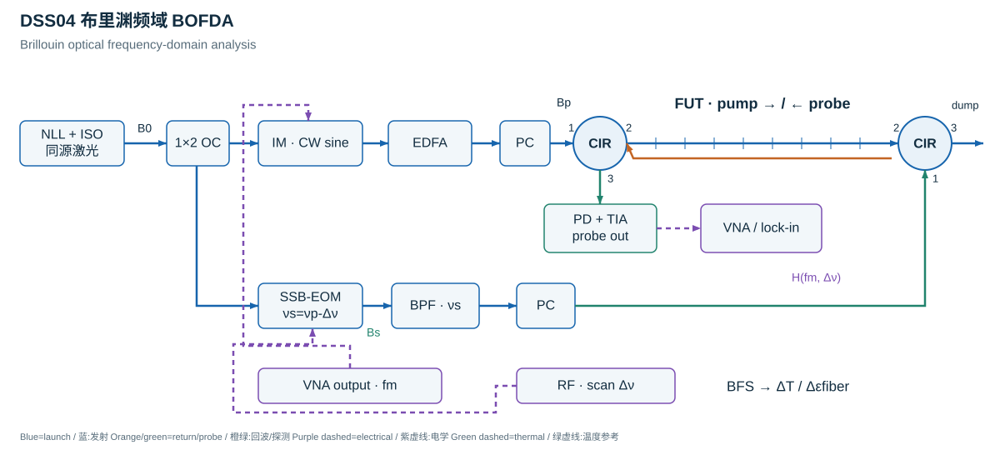

测量对象测量光纤自身的轴向应变或应变变化。光纤应变不自动等于围岩、套管或结构应变。Axial fiber strain or strain change. Fiber strain is not automatically formation, casing, or structural strain.
两类主要机制布里渊路线估计局部 BFS；瑞利路线比较参考与当前散射指纹，估计局部谱移。Brillouin methods estimate local BFS; Rayleigh methods correlate current and reference fingerprints to recover local spectral shifts.
温度交叉敏感\Delta\nu_B=C_\varepsilon\Delta\varepsilon_{\mathrm{fiber}}+C_T\Delta T。只有一个频移时，需要独立温度信息或明确约束才能计算应变。\Delta\nu_B=C_\varepsilon\Delta\varepsilon_{\mathrm{fiber}}+C_T\Delta T. A single shift needs independent temperature information or explicit constraints to recover strain.
应变传递涂覆、黏结、光缆结构、滑移与剪滞影响 \varepsilon_{\mathrm{fiber}} 到 \varepsilon_{\mathrm{host}} 的关系；温度补偿不能替代机械耦合验证。Coating, bonding, cable construction, slip, and shear lag affect \varepsilon_{\mathrm{fiber}}-to-\varepsilon_{\mathrm{host}} transfer. Temperature compensation cannot replace coupling validation.
02测量过程：从光到结果
发射/参考状态
局部散射谱
频移或谱相关
温度补偿
光纤应变与传递验证
03代表性实现方式
每一种方式分别说明测量机制、直接观测与适用条件。光路示意和关键公式可按需展开。
01自发布里渊 BOTDR
工作方式单端发射脉冲；回波与同源频移本振相干检测，逐位置恢复 BFS。Launch from one end and coherently detect the return with a frequency-shifted same-source local oscillator to recover BFS by position.
直接观测自发布里渊回波频谱中心Center of the spontaneous Brillouin spectrum
适用条件与局限自发散射信号弱，通常需要平均与扫频/谱估计；单端可达不意味着温度与应变自动分离。Spontaneous returns are weak and usually require averaging and spectral estimation; single-ended access does not automatically separate strain and temperature.
Stokes 回波约为 \nu_0-\nu_B；本振经单边带频移与滤波，把 GHz 量级布里渊光频差转到接收器带宽内。频移量与增减方向需标定。The Stokes return is near \nu_0-\nu_B. Shift/filter the LO sideband to place the GHz-scale Brillouin beat inside the receiver bandwidth; calibrate the offset and its sign.
按往返时延分窗，估计每窗频谱。脉宽与声子寿命会影响空间响应和谱宽。Window by round-trip delay and estimate each spectrum. Pulse duration and phonon lifetime affect spatial response and linewidth.
ΔνB · 温度与应变 / Cross-sensitivity
\Delta\nu_B=C_\varepsilon\Delta\varepsilon_{\mathrm{fiber}}+C_T\Delta T
相对于参考状态的小变化模型。C_\varepsilon 的单位为 Hz/单位应变（或 MHz/με），C_T 为 Hz/K；不能混用单位或把单一频移当作两个未知量。A small-change model relative to a reference. C_\varepsilon is in Hz per unit strain (or MHz/με), C_T in Hz/K. One shift cannot identify two unknowns.
应变测量需要独立温度信息；测温需要已知或隔离的光纤应变。光缆热膨胀与约束会改变有效标定。Strain sensing requires independent temperature information; thermometry requires known or isolated fiber strain. Cable expansion and constraint alter the effective calibration.
工作方式泵浦脉冲与连续探测光反向传播，在逐位置增益谱中估计应变。A pump pulse and CW probe counter-propagate; local gain spectra are converted to strain after compensation.
直接观测局部增益谱与 BFSLocal gain spectrum and BFS
适用条件与局限通常需光纤两端可达或形成回路；泵浦耗尽、非局部效应、偏振与温度交叉敏感均须控制。Normally needs access to both ends or a loop. Control depletion, non-local effects, polarization, and temperature cross-sensitivity.
同源泵浦与探测支路分开。探测光经单边带调制及选边带滤波，下移到 \nu_s=\nu_p-\Delta\nu；两束在光纤中反向传播。Pump and probe are derived from the same source. Single-sideband modulation and sideband selection create \nu_s=\nu_p-\Delta\nu; the waves counter-propagate.
弱增益、近稳态条件下用洛伦兹线型拟合局部谱。强泵浦耗尽、脉冲瞬态及谱重叠会破坏简化模型。Fit a local Lorentzian in the weak-gain, near-steady regime. Pump depletion, pulse transients, and overlapping spectra can invalidate this approximation.
按触发时延定位，并扫描泵浦与探测频差 Δν；每个 z 拟合 Brillouin frequency shift，简称 BFS。Locate by trigger delay and scan the pump-probe detuning Δν. Fit the Brillouin frequency shift (BFS) at each position.
ΔνB · 温度与应变 / Cross-sensitivity
\Delta\nu_B=C_\varepsilon\Delta\varepsilon_{\mathrm{fiber}}+C_T\Delta T
相对于参考状态的小变化模型。C_\varepsilon 的单位为 Hz/单位应变（或 MHz/με），C_T 为 Hz/K；不能混用单位或把单一频移当作两个未知量。A small-change model relative to a reference. C_\varepsilon is in Hz per unit strain (or MHz/με), C_T in Hz/K. One shift cannot identify two unknowns.
应变测量需要独立温度信息；测温需要已知或隔离的光纤应变。光缆热膨胀与约束会改变有效标定。Strain sensing requires independent temperature information; thermometry requires known or isolated fiber strain. Cable expansion and constraint alter the effective calibration.
工作方式用共同起点、不同宽度的两组脉冲测量，差分提取短尾段的局部贡献。Acquire two pulses with a common leading edge and different widths; their difference isolates the contribution of the short trailing interval.
直接观测两条增益迹线之差Difference of two gain traces
适用条件与局限不能把小脉宽差当作无条件空间分辨率；两次采集中的状态变化会产生差分伪影。A small width difference does not guarantee resolution; changes between acquisitions can create subtraction artifacts.
同源泵浦与探测支路分开。探测光经单边带调制及选边带滤波，下移到 \nu_s=\nu_p-\Delta\nu；两束在光纤中反向传播。Pump and probe are derived from the same source. Single-sideband modulation and sideband selection create \nu_s=\nu_p-\Delta\nu; the waves counter-propagate.
两组迹线先做时间对齐和功率归一；相同前沿条件下差值提取长脉冲尾段。Align timing and normalize power first; under matched leading-edge conditions, subtraction isolates the longer pulse tail.
这是理想差分门宽尺度；实际受脉冲边沿、接收带宽、声学瞬态与减法噪声限制。This is the ideal differential gate scale, limited in practice by pulse edges, receive bandwidth, acoustic transients, and subtraction noise.
ΔνB · 温度与应变 / Cross-sensitivity
\Delta\nu_B=C_\varepsilon\Delta\varepsilon_{\mathrm{fiber}}+C_T\Delta T
相对于参考状态的小变化模型。C_\varepsilon 的单位为 Hz/单位应变（或 MHz/με），C_T 为 Hz/K；不能混用单位或把单一频移当作两个未知量。A small-change model relative to a reference. C_\varepsilon is in Hz per unit strain (or MHz/με), C_T in Hz/K. One shift cannot identify two unknowns.
应变测量需要独立温度信息；测温需要已知或隔离的光纤应变。光缆热膨胀与约束会改变有效标定。Strain sensing requires independent temperature information; thermometry requires known or isolated fiber strain. Cable expansion and constraint alter the effective calibration.
工作方式连续泵浦以小幅正弦强度调制；测量探测光响应的幅度与相位，再转为空间响应。Apply small sinusoidal intensity modulation to a CW pump; measure probe amplitude and phase, then reconstruct space.
直接观测小信号复传递函数 H(fm,Δν)Small-signal complex transfer H(fm,Δν)
适用条件与局限傅里叶反演需有限带宽窗函数、参考去嵌入及声学响应考虑；不是把 BOTDA 的时间轴简单换个名字。Reconstruction needs bandwidth/window treatment, reference de-embedding, and acoustic-response considerations; it is not merely a renamed BOTDA time axis.
代表性光路与完整公式

概念示意，非按比例、非实测数据。
Bp · 小信号调制 / Small-signal modulation
P_p(t)=P_0[1+m\cos(2\pi f_mt)],\qquad m\ll1
扫描电学调制频率 fm，同时扫描光学泵浦-探测频差 Δν；两种频率不能混淆。Scan the electrical modulation fm and the optical pump-probe detuning Δν; these are different frequency axes.
VNA 或同步锁相测量相对发射调制的幅度与相位，不能仅测平均光强。A VNA or synchronous lock-in measures amplitude and phase relative to the pump modulation; mean intensity alone is insufficient.
延迟零点取决于系统参考；\Delta z\simeq\frac c{2n_gB_m}，无歧义距离≈\frac c{2n_g\delta f_m}，均为理想尺度。Calibrate the delay origin. \Delta z\simeq\frac c{2n_gB_m} and unambiguous range≈\frac c{2n_g\delta f_m} are ideal scales.
ΔνB · 温度与应变 / Cross-sensitivity
\Delta\nu_B=C_\varepsilon\Delta\varepsilon_{\mathrm{fiber}}+C_T\Delta T
相对于参考状态的小变化模型。C_\varepsilon 的单位为 Hz/单位应变（或 MHz/με），C_T 为 Hz/K；不能混用单位或把单一频移当作两个未知量。A small-change model relative to a reference. C_\varepsilon is in Hz per unit strain (or MHz/με), C_T in Hz/K. One shift cannot identify two unknowns.
应变测量需要独立温度信息；测温需要已知或隔离的光纤应变。光缆热膨胀与约束会改变有效标定。Strain sensing requires independent temperature information; thermometry requires known or isolated fiber strain. Cable expansion and constraint alter the effective calibration.
工作方式共同频率调制的泵浦与探测光在特定位置形成频差匹配区；移动相关峰扫描光纤。Common frequency modulation creates a localized pump-probe match; move the correlation peak to scan the fiber.
直接观测相关峰附近的局部增益谱Local gain spectrum near a correlation peak
适用条件与局限多个相关峰、背景增益与扫描位置标定决定可用范围；通常需要两端接入，不能沿用 OTDR 的脉冲时延公式定位。Multiple correlation peaks, background gain, and position calibration limit the usable range. Usually double-ended; pulse time-of-flight is not the localization rule.
这是正弦 FM 实现的峰距及分辨率趋势；比例系数取决于线宽、调制与门控，须依据实际实现计算。For sinusoidal FM this gives peak spacing and a resolution trend; prefactors depend on linewidth, modulation, and gating.
ΔνB · 温度与应变 / Cross-sensitivity
\Delta\nu_B=C_\varepsilon\Delta\varepsilon_{\mathrm{fiber}}+C_T\Delta T
相对于参考状态的小变化模型。C_\varepsilon 的单位为 Hz/单位应变（或 MHz/με），C_T 为 Hz/K；不能混用单位或把单一频移当作两个未知量。A small-change model relative to a reference. C_\varepsilon is in Hz per unit strain (or MHz/με), C_T in Hz/K. One shift cannot identify two unknowns.
应变测量需要独立温度信息；测温需要已知或隔离的光纤应变。光缆热膨胀与约束会改变有效标定。Strain sensing requires independent temperature information; thermometry requires known or isolated fiber strain. Cable expansion and constraint alter the effective calibration.
工作方式扫频干涉给出距离，再用局部瑞利谱相关估计轴向光纤应变变化。Swept interferometry establishes distance; local Rayleigh correlation then estimates changes in axial fiber strain.
直接观测相对参考状态的局部谱移Local spectral shift relative to a reference
适用条件与局限需要保存参考指纹、选择标距并校准温度；局部相关失败时应标记缺测，不能自动填成可靠应变。Retain reference fingerprints, choose a gauge length, and calibrate temperature. Mark failed correlation as missing rather than inventing reliable strain.
扫频光分为测量与参考支路；辅助不等臂 MZI 提供扫频时钟。κ 为实际光频扫描速率。Split the swept source into measurement and reference branches. An auxiliary unequal-arm MZI supplies the sweep clock; κ is the actual optical-frequency sweep rate.
回波与参考光相干混频。τrel 是相对参考支路的延迟，需要零点标定，不能默认全部距离从光源开始。Mix the return with the reference. τrel is the delay relative to that arm; calibrate the distance origin rather than assuming it begins at the laser.
按实际光频重采样后作傅里叶变换。Bν 是光频扫描带宽；上述理想分辨率不等于应变标距。Resample on the measured optical-frequency grid before Fourier transformation. Bν is the optical scan bandwidth; ideal reflectometric resolution differs from the strain gauge length.
在相同窗口内比较参考与当前瑞利指纹；δν 是当前谱相对参考的有符号光频移。通常拉伸导致红移 \delta\nu<0，因此 q>0；须按实际相关实现核对符号。Compare reference and current Rayleigh fingerprints in matching windows. δν is the signed current-minus-reference optical-frequency shift. Tension usually gives a red shift \delta\nu<0, hence q>0; verify the sign in the actual correlation implementation.
q → Δε / ΔT · 解耦 / Compensation
q=K_\varepsilon\Delta\varepsilon_{\mathrm{fiber}}+K_T\Delta T
K_\varepsilon、K_T 按此符号约定实测标定；普通硅纤中通常为正。温度和应变同时变化时需第二个独立观测。Calibrate K_\varepsilon and K_T under this sign convention; they are usually positive for ordinary silica fiber. Simultaneous temperature and strain changes require a second independent observation.
工作方式对多个稳定光频分别发射脉冲，用时延定位、频率扫描构建局部指纹，再相关求应变。Launch pulses at multiple stabilized frequencies; use delay for location and the frequency scan for local fingerprint correlation.
直接观测每个距离窗的瑞利频谱移Rayleigh spectral shift per distance window
适用条件与局限频扫相干 OTDR 的谱移法与常见 DAS 相位法不同；扫描时长、频率稳定度和相关窗限制动态测量。Spectral-shift coherent OTDR differs from common phase-based DAS. Scan duration, frequency stability, and correlation windows constrain dynamic measurements.
光频在各次脉冲之间步进，单次脉冲内保持近似稳定；不同于连续扫频 OFDR。Step frequency between launches and keep it approximately stable within each pulse; this differs from continuously swept OFDR.
i(t,νm) → S(z,νm) · 指纹 / Fingerprint
z=\frac{c(t-t_0)}{2n_g},\qquad S(z,\nu_m):\text{ local Rayleigh signature}
空间位置由脉冲时延给出；光频轴用于局部指纹相关，不用于 OFDR 距离拍频公式。Pulse delay gives position. The optical-frequency axis is for local fingerprint correlation, not OFDR beat-frequency ranging.
在相同窗口内比较参考与当前瑞利指纹；δν 是当前谱相对参考的有符号光频移。通常拉伸导致红移 \delta\nu<0，因此 q>0；须按实际相关实现核对符号。Compare reference and current Rayleigh fingerprints in matching windows. δν is the signed current-minus-reference optical-frequency shift. Tension usually gives a red shift \delta\nu<0, hence q>0; verify the sign in the actual correlation implementation.
q → Δε / ΔT · 解耦 / Compensation
q=K_\varepsilon\Delta\varepsilon_{\mathrm{fiber}}+K_T\Delta T
K_\varepsilon、K_T 按此符号约定实测标定；普通硅纤中通常为正。温度和应变同时变化时需第二个独立观测。Calibrate K_\varepsilon and K_T under this sign convention; they are usually positive for ordinary silica fiber. Simultaneous temperature and strain changes require a second independent observation.
同样需要温度补偿与参考状态；整个频率扫描期间应变变化会破坏准静态假设。Temperature compensation and a reference remain necessary; changes during the full frequency scan break the quasi-static assumption.
光源与发射控制激光器提供光；调制器产生脉冲、频移或扫频；驱动与偏置控制决定实际发射波形。Lasers supply light; modulators create pulses, shifts, or sweeps. Drivers and bias controls shape the actual launch.
光路与光纤耦合器分光或混频，环形器区分发射与回波，光纤提供分布式散射；光学滤波按谱带选型。Couplers split/mix, circulators route launch/return, and fiber provides distributed scattering. Select filters by optical band.
接收与采集探测器把光信号转为电信号，采集卡或时间标记器记录信号；带宽、增益和同步均需校准。Detectors convert light to electrical signals, recorded by digitizers or time taggers. Calibrate bandwidth, gain, and timing.
处理与标定上位机完成比值、谱拟合或相关解调，再用参考温度、应变灵敏度和安装信息赋予物理量。Compute ratios, fits, or correlations, then calibrate with reference temperatures, strain sensitivities, and installation information.
空间尺度空间分辨率、应变标距与输出采样间距分别定义；密集输出点不代表更高的真实分辨率。Resolution, gauge length, and output sample spacing are distinct; dense samples do not establish finer true resolution.
交叉敏感温度、应变与机械耦合可能同时影响读数。先确认仪器的直接观测，再讨论目标物理过程。Temperature, strain, and coupling can affect readings together. Establish the instrument observable before interpreting the target process.
验证层次这些光路与关系式用于原理说明；代数校验不等于仪器性能验证，也不等于现场解释成立。These paths and relations teach principles; algebra checks are not instrument-performance or field-interpretation validation.